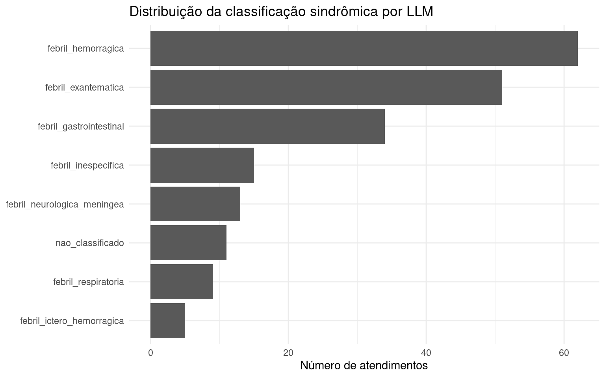

Ver código
source("R/00_pacotes.R")
source("R/04_duckdb.R")
source("R/07_llm_clients.R")
source("R/08_llm_classification.R")source("R/00_pacotes.R")
source("R/04_duckdb.R")
source("R/07_llm_clients.R")
source("R/08_llm_classification.R")A terceira camada do pipeline utiliza um modelo de linguagem para interpretar o texto clínico e atribuir uma síndrome febril principal.
Diferentemente da camada de CID, que utiliza códigos diagnósticos estruturados, e da camada regex, que utiliza padrões textuais explícitos, a camada LLM busca capturar uma interpretação clínica resumida do atendimento a partir da queixa e da anamnese.
Nesta primeira versão, a LLM tem papel interpretativo e comparativo. Ela não substitui automaticamente o CID. Sua principal função é produzir uma leitura textual independente para comparação com CID e regex, apoiar auditoria e permitir refinamento quando a codificação estruturada for genérica ou pouco informativa.
A camada LLM foi desenhada com três princípios:
Independência do CID e da regex
A LLM classifica apenas o texto clínico.
Saída estruturada e auditável
O modelo deve retornar JSON válido, sem texto livre fora do objeto JSON.
Desacoplamento do provedor
O pipeline pode funcionar com modo simulado, modelo local ou API externa.
A arquitetura implementada é:
texto clínico
↓
prompt sindrômico
↓
cliente LLM
├── mock
├── ollama
├── gemini
└── openai_compatible
↓
JSON estruturado
↓
validação
↓
tb_classificacao_llmA função llm_generate() atua como uma interface única para diferentes provedores.
Nesta etapa, o modo padrão é mock. Isso permite que o Quarto Book continue renderizando integralmente mesmo sem internet, sem chave de API e sem modelo local instalado.
Em uso operacional, a configuração pode ser alterada por variáveis de ambiente, sem modificar a lógica do pipeline.
Exemplo com Ollama local:
Sys.setenv(
LLM_PROVIDER = "ollama",
LLM_MODEL = "qwen3.5:latest",
LLM_BASE_URL = "http://localhost:11434",
LLM_JSON_MODE = "true",
LLM_TIMEOUT_SEC = "180",
LLM_MAX_RECORDS = "30"
)O nome do modelo deve corresponder exatamente ao nome listado por:
ollama listExemplo com Gemini:
LLM_PROVIDER=gemini
LLM_MODEL=gemini-1.5-flash
LLM_API_KEY=sua_chave_aquiExemplo com API OpenAI-compatible:
LLM_PROVIDER=openai_compatible
LLM_MODEL=nome_do_modelo
LLM_BASE_URL=https://api.exemplo.com/v1
LLM_API_KEY=sua_chave_aquiusar_llm_real_no_render <- tolower(
Sys.getenv("RUN_REAL_LLM_IN_RENDER", unset = "false")
) %in% c("true", "1", "yes", "sim")
if (!usar_llm_real_no_render) {
Sys.setenv(
LLM_PROVIDER = "mock",
LLM_MODEL = "mock-sindromico-v1",
LLM_BASE_URL = "",
LLM_JSON_MODE = "true",
LLM_TIMEOUT_SEC = "120"
)
}
llm_config <- make_llm_config()
max_records_llm <- as.integer(
Sys.getenv("LLM_MAX_RECORDS", unset = "200")
)
valor_config <- function(x) {
if (is.null(x) || length(x) == 0) {
return(NA_character_)
}
if (length(x) == 1 && is.na(x)) {
return(NA_character_)
}
as.character(x[[1]])
}
config_tbl <- list(
provider = valor_config(llm_config$provider),
model = valor_config(llm_config$model),
base_url = valor_config(llm_config$base_url),
temperature = valor_config(llm_config$temperature),
max_tokens = valor_config(llm_config$max_tokens),
timeout_sec = valor_config(llm_config$timeout_sec),
json_mode = valor_config(llm_config$json_mode),
max_records = valor_config(max_records_llm)
) |>
tibble::enframe(
name = "parametro",
value = "valor"
)
knitr::kable(
config_tbl,
caption = "Configuração ativa da camada LLM"
)| parametro | valor |
|---|---|
| provider | mock |
| model | mock-sindromico-v1 |
| base_url | |
| temperature | 0 |
| max_tokens | 800 |
| timeout_sec | 120 |
| json_mode | TRUE |
| max_records | 200 |
O LLM deve retornar exclusivamente um JSON com os seguintes campos:
{
"sindrome_principal_llm": "febril_respiratoria",
"febre_presente": true,
"febre_negada": false,
"sintomas_identificados": ["febre", "tosse", "coriza"],
"justificativa_llm": "Texto menciona febre, tosse e coriza, compatível com síndrome febril respiratória."
}Não é utilizada confiança numérica. A justificativa curta serve para auditoria técnica e revisão por especialistas.
O prompt abaixo é o texto enviado ao modelo para cada atendimento. Ele instrui a LLM a usar apenas o texto clínico, restringe as categorias permitidas e exige uma resposta em JSON válido.
Você é um classificador sindrômico para vigilância em saúde.
Sua tarefa é ler exclusivamente o texto clínico de um atendimento e classificar o registro em UMA síndrome febril principal.
Você NÃO deve usar CID, diagnóstico codificado, exames laboratoriais externos, dados epidemiológicos externos ou conhecimento sobre surtos em curso. Use apenas o texto clínico informado.
Síndromes permitidas:
1. febril_respiratoria
- Febre associada a tosse, coriza, dor de garganta, dispneia, congestão nasal, sintomas gripais ou respiratórios.
2. febril_exantematica
- Febre associada a exantema, rash, manchas vermelhas, lesões cutâneas difusas ou quadro febril com erupção de pele.
3. febril_gastrointestinal
- Febre associada a diarreia, vômitos, náusea, dor abdominal ou sintomas gastrointestinais predominantes.
4. febril_hemorragica
- Febre associada a sangramento, epistaxe, gengivorragia, petéquias, equimoses, manchas roxas, sangue em vômito, urina ou fezes.
5. febril_ictero_hemorragica
- Febre associada simultaneamente a icterícia ou sinais como pele/olhos amarelos, colúria, urina escura, e sinais hemorrágicos.
6. febril_neurologica_meningea
- Febre associada a rigidez de nuca, sinais meníngeos, convulsão, confusão mental, rebaixamento do nível de consciência, cefaleia intensa com sinais neurológicos.
7. febril_inespecifica
- Febre presente, mas sem eixo respiratório, exantemático, gastrointestinal, hemorrágico, ictérico ou neurológico predominante.
8. nao_classificado
- Use quando não houver febre descrita, quando a febre estiver negada, ou quando o texto não sustentar uma síndrome febril.
Regras obrigatórias:
- Se houver negação de febre, como "nega febre", "sem febre", "afebril", "não refere febre" ou equivalente, classifique como nao_classificado, exceto se o próprio texto trouxer febre atual clara em outro trecho.
- Não atribua síndrome febril apenas por sintomas isolados sem febre.
- Não invente sintomas que não aparecem no texto.
- Não use confiança numérica.
- Retorne exclusivamente JSON válido.
- Não use markdown.
- Não escreva texto antes ou depois do JSON.
- Não inclua comentários.
- Não inclua tags como <think> ou raciocínio passo a passo.
- Em caso de dúvida, prefira nao_classificado.
Formato obrigatório da resposta:
{
"sindrome_principal_llm": "uma_das_sindromes_permitidas",
"febre_presente": true,
"febre_negada": false,
"sintomas_identificados": ["lista", "de", "sintomas"],
"justificativa_llm": "justificativa curta, objetiva e auditável"
}
Texto clínico para classificar:
"""Paciente com febre há dois dias, tosse seca, coriza e dor de garganta. Nega falta de ar."""O exemplo abaixo executa a camada LLM sobre um texto clínico simples. No modo mock, a resposta é simulada; em ollama, gemini ou openai_compatible, o mesmo código chama o provedor configurado.
exemplo_classificacao <- classify_one_by_llm(
record_id = "exemplo_001",
texto_clinico = exemplo_texto,
config = llm_config
)
exemplo_classificacao |>
dplyr::select(
sindrome_principal_llm,
febre_presente,
febre_negada,
sintomas_identificados,
justificativa_llm,
parse_ok,
provider_llm,
modelo_llm
) |>
knitr::kable(
caption = "Exemplo de resposta estruturada produzida pela camada LLM"
)| sindrome_principal_llm | febre_presente | febre_negada | sintomas_identificados | justificativa_llm | parse_ok | provider_llm | modelo_llm |
|---|---|---|---|---|---|---|---|
| febril_respiratoria | TRUE | FALSE | febre; sintomas respiratórios | Texto menciona febre, sintomas respiratórios, compatível com febril_respiratoria. | TRUE | mock | mock-sindromico-v1 |
A classificação é executada sobre a tabela de atendimentos previamente gravada no DuckDB.
con <- connect_duckdb()
init_duckdb_schema(con)
atendimentos <- read_atendimentos(con)
dplyr::glimpse(atendimentos)Rows: 700
Columns: 17
$ record_id <chr> "SYN0001", "SYN0002", "SYN0003", "SYN0004"…
$ data_atendimento <date> 2025-01-02, 2025-01-04, 2025-01-04, 2025-…
$ unidade <chr> "Hospital Municipal B", "Hospital Municipa…
$ idade <dbl> 80, 81, 68, 6, 49, 26, 10, 29, 56, 69, 80,…
$ sexo <chr> "M", "M", "F", "M", "M", "M", "M", "M", "F…
$ cid <chr> "B34", "A39", "B34", "A08", NA, "J06", "A0…
$ queixa <chr> "Febre e dor no corpo", "Febre e cefaleia"…
$ anamnese <chr> "Refere febre não aferida, dor no corpo im…
$ faixa_etaria <chr> "60+", "60+", "60+", "5-14", "40-59", "15-…
$ texto_clinico <chr> "Febre e dor no corpo Refere febre não afe…
$ texto_clinico_norm <chr> "febre e dor no corpo refere febre nao afe…
$ territorio <chr> "AP 2.1", "AP 5.1", "AP 3.2", "AP 5.1", "A…
$ bairro <chr> "Campo Grande", "Botafogo", "Méier", "Camp…
$ cid_nome <chr> "Infecção viral de localização não especif…
$ sindrome_esperada_sintetica <chr> "febril_inespecifica", "febril_neurologica…
$ cid_status_sintetico <chr> "coerente", "coerente", "coerente", "coere…
$ febre_negada_sintetica <lgl> FALSE, FALSE, FALSE, FALSE, FALSE, FALSE, …Para manter a renderização rápida no modo demonstrativo, o capítulo usa uma amostra da base. Em produção, a variável LLM_MAX_RECORDS pode ser ajustada ou removida da lógica de execução.
classificacao_llm <- classify_by_llm(
dados = atendimentos,
config = llm_config,
max_records = max_records_llm
)
write_classificacao_llm(
con = con,
dados = classificacao_llm,
overwrite = TRUE
)
write_execution_log(
con = con,
etapa = "classificacao_llm",
n_registros = nrow(classificacao_llm),
observacao = paste(
"Provider:", llm_config$provider,
"| Modelo:", llm_config$model,
"| JSON mode:", valor_config(llm_config$json_mode),
"| Max records:", max_records_llm
)
)
classificacao_llm |>
dplyr::slice_head(n = 5) |>
dplyr::select(
record_id,
sindrome_principal_llm,
febre_presente,
febre_negada,
sintomas_identificados,
justificativa_llm,
parse_ok
) |>
knitr::kable(
caption = "Primeiros registros classificados pela camada LLM"
)| record_id | sindrome_principal_llm | febre_presente | febre_negada | sintomas_identificados | justificativa_llm | parse_ok |
|---|---|---|---|---|---|---|
| SYN0001 | febril_hemorragica | TRUE | FALSE | febre; sintomas respiratórios; sintomas gastrointestinais; sangramento; sintomas inespecíficos | Texto menciona febre, sintomas respiratórios, sintomas gastrointestinais, sangramento, sintomas inespecíficos, compatível com febril_hemorragica. | TRUE |
| SYN0002 | febril_neurologica_meningea | TRUE | FALSE | febre; sinais neurológicos/meníngeos; sintomas inespecíficos | Texto menciona febre, sinais neurológicos/meníngeos, sintomas inespecíficos, compatível com febril_neurologica_meningea. | TRUE |
| SYN0003 | febril_hemorragica | TRUE | FALSE | febre; exantema/manchas; sintomas gastrointestinais; sangramento; sintomas inespecíficos | Texto menciona febre, exantema/manchas, sintomas gastrointestinais, sangramento, sintomas inespecíficos, compatível com febril_hemorragica. | TRUE |
| SYN0004 | febril_gastrointestinal | TRUE | FALSE | febre; sintomas gastrointestinais | Texto menciona febre, sintomas gastrointestinais, compatível com febril_gastrointestinal. | TRUE |
| SYN0005 | febril_exantematica | TRUE | FALSE | febre; sintomas respiratórios; exantema/manchas; sintomas gastrointestinais; sintomas inespecíficos | Texto menciona febre, sintomas respiratórios, exantema/manchas, sintomas gastrointestinais, sintomas inespecíficos, compatível com febril_exantematica. | TRUE |
resumo_llm <- summarise_llm_classification(classificacao_llm)
resumo_llm |>
dplyr::mutate(prop = scales::percent(prop, accuracy = 0.1)) |>
knitr::kable(
caption = "Distribuição da classificação por LLM"
)| sindrome_principal_llm | n | prop |
|---|---|---|
| febril_hemorragica | 62 | 31.0% |
| febril_exantematica | 51 | 25.5% |
| febril_gastrointestinal | 34 | 17.0% |
| febril_inespecifica | 15 | 7.5% |
| febril_neurologica_meningea | 13 | 6.5% |
| nao_classificado | 11 | 5.5% |
| febril_respiratoria | 9 | 4.5% |
| febril_ictero_hemorragica | 5 | 2.5% |
plot_llm_syndrome_distribution(classificacao_llm)
O campo parse_ok indica se a resposta foi interpretada como JSON válido e transformada no esquema esperado.
classificacao_llm |>
dplyr::count(parse_ok) |>
dplyr::mutate(prop = scales::percent(n / sum(n), accuracy = 0.1)) |>
knitr::kable(
caption = "Qualidade do parse da resposta LLM"
)| parse_ok | n | prop |
|---|---|---|
| TRUE | 200 | 100.0% |
No modo mock, espera-se que parse_ok seja verdadeiro para todos os registros. Em provedores reais, esse indicador será importante para monitorar falhas de formatação, instabilidade de resposta ou necessidade de ajuste do prompt.
A amostra abaixo permite revisar, caso a caso, o texto clínico original, a classificação atribuída pela LLM, os sintomas extraídos e a justificativa retornada.
amostra_auditoria_llm <- sample_llm_audit(
dados = atendimentos,
classificacao_llm = classificacao_llm,
n = 10
)
amostra_auditoria_llm |>
dplyr::select(
record_id,
cid,
texto_clinico,
sindrome_principal_llm,
febre_presente,
febre_negada,
sintomas_identificados,
justificativa_llm
) |>
knitr::kable(
caption = "Amostra para auditoria da classificação por LLM"
)| record_id | cid | texto_clinico | sindrome_principal_llm | febre_presente | febre_negada | sintomas_identificados | justificativa_llm |
|---|---|---|---|---|---|---|---|
| SYN0001 | B34 | Febre e dor no corpo Refere febre não aferida, dor no corpo importante, cefaleia e mal estar geral. Nega tosse, nega diarreia e nega sangramento. | febril_hemorragica | TRUE | FALSE | febre; sintomas respiratórios; sintomas gastrointestinais; sangramento; sintomas inespecíficos | Texto menciona febre, sintomas respiratórios, sintomas gastrointestinais, sangramento, sintomas inespecíficos, compatível com febril_hemorragica. |
| SYN0002 | A39 | Febre e cefaleia Criança com febre e convulsão em casa. Sonolenta na chegada, com irritabilidade importante. | febril_neurologica_meningea | TRUE | FALSE | febre; sinais neurológicos/meníngeos; sintomas inespecíficos | Texto menciona febre, sinais neurológicos/meníngeos, sintomas inespecíficos, compatível com febril_neurologica_meningea. |
| SYN0003 | B34 | Febre e dor no corpo Paciente relata febre baixa, artralgia e cansaço. Nega sangramentos, nega rash e nega vômitos. | febril_hemorragica | TRUE | FALSE | febre; exantema/manchas; sintomas gastrointestinais; sangramento; sintomas inespecíficos | Texto menciona febre, exantema/manchas, sintomas gastrointestinais, sangramento, sintomas inespecíficos, compatível com febril_hemorragica. |
| SYN0004 | A08 | Febre e diarreia Relata febre, nausea, episódios de vômito e evacuações líquidas. Sem sintomas respiratórios. !!! | febril_gastrointestinal | TRUE | FALSE | febre; sintomas gastrointestinais | Texto menciona febre, sintomas gastrointestinais, compatível com febril_gastrointestinal. |
| SYN0005 | NA | Febre e manchas FEBRE, manchas avermelhadas no corpo e dor no corpo. Sem diarreia. Sem tosse importante. | febril_exantematica | TRUE | FALSE | febre; sintomas respiratórios; exantema/manchas; sintomas gastrointestinais; sintomas inespecíficos | Texto menciona febre, sintomas respiratórios, exantema/manchas, sintomas gastrointestinais, sintomas inespecíficos, compatível com febril_exantematica. |
| SYN0006 | J06 | Febre e tosse Pcte com fbre não aferida, odinofagia, coriza e tosse. Relata cansaço e dor no corpo. Nega sintomas gastrointestinais. | febril_respiratoria | TRUE | FALSE | febre; sintomas respiratórios; sintomas inespecíficos | Texto menciona febre, sintomas respiratórios, sintomas inespecíficos, compatível com febril_respiratoria. |
| SYN0007 | A05 | Febre e diarreia Criança com febre alta, vômitos repetidos e diarreia líquida. Mãe refere pouca aceitação alimentar e sonolência leve. | febril_gastrointestinal | TRUE | FALSE | febre; sintomas gastrointestinais | Texto menciona febre, sintomas gastrointestinais, compatível com febril_gastrointestinal. |
| SYN0008 | R50 | Febre e dor no corpo Refere fbre não aferida, dor no corpo importante, cefaleia e mal estar geral. Nega tosse, nega diarreia e nega sangramento. | febril_hemorragica | TRUE | FALSE | febre; sintomas respiratórios; sintomas gastrointestinais; sangramento; sintomas inespecíficos | Texto menciona febre, sintomas respiratórios, sintomas gastrointestinais, sangramento, sintomas inespecíficos, compatível com febril_hemorragica. |
| SYN0009 | J06 | Febre e tosse FEBRE alta desde ontem, tosse produtiva, congestão nasal e mal estar. Sem manchas na pele. Sem vômitos. Refere piora da tosse durante a noite. | febril_exantematica | TRUE | FALSE | febre; sintomas respiratórios; exantema/manchas; sintomas gastrointestinais; sintomas inespecíficos | Texto menciona febre, sintomas respiratórios, exantema/manchas, sintomas gastrointestinais, sintomas inespecíficos, compatível com febril_exantematica. |
| SYN0010 | G03 | Febre e cefaleia Paciente com febre, cefaleia intensa, rigidez de nuca e fotofobia. Refere vômitos e piora progressiva desde a manhã. | febril_neurologica_meningea | TRUE | FALSE | febre; sintomas gastrointestinais; sinais neurológicos/meníngeos; sintomas inespecíficos | Texto menciona febre, sintomas gastrointestinais, sinais neurológicos/meníngeos, sintomas inespecíficos, compatível com febril_neurologica_meningea. |
Para usar um modelo local via Ollama, não é necessário alterar a lógica do pipeline. Basta definir as variáveis de ambiente antes da execução.
Exemplo:
Sys.setenv(
LLM_PROVIDER = "ollama",
LLM_MODEL = "qwen3.5:latest",
LLM_BASE_URL = "http://localhost:11434",
LLM_JSON_MODE = "true",
LLM_TIMEOUT_SEC = "180",
LLM_MAX_RECORDS = "30"
)
quarto::quarto_render()Para verificar o nome correto do modelo instalado:
ollama listPara fins de reprodutibilidade, o Quarto Book utiliza mock como padrão. Em uso operacional ou em validação técnica, o mesmo capítulo pode ser executado com ollama, gemini ou openai_compatible, mantendo a mesma interface de classificação.
Além do modo mock, utilizado por padrão para garantir reprodutibilidade, a camada LLM foi testada localmente com um modelo Qwen executado via Ollama.
O objetivo deste teste foi verificar se a arquitetura da camada LLM consegue substituir a resposta simulada por uma chamada real a um modelo local, mantendo a mesma interface de entrada e saída do pipeline. Dessa forma, a função da validação não foi medir desempenho classificatório definitivo, mas confirmar a viabilidade técnica da camada LLM em um ambiente real.
A execução foi realizada em ambiente local com GPU NVIDIA GeForce RTX 4060 Laptop GPU, com aproximadamente 8 GB de VRAM. O modelo foi chamado via endpoint local do Ollama.
A configuração utilizada foi:
Sys.setenv(
LLM_PROVIDER = "ollama",
LLM_MODEL = "qwen3.5:latest",
LLM_BASE_URL = "http://localhost:11434",
LLM_JSON_MODE = "false",
LLM_TIMEOUT_SEC = "180",
LLM_MAX_RECORDS = "30"
)Para esse modelo local, optou-se por LLM_JSON_MODE=false. Nessa configuração, o Ollama retorna o conteúdo principal no campo response, e o parser do pipeline extrai e valida o objeto JSON retornado pelo modelo. Essa estratégia foi mais estável no teste local do que forçar format = "json" diretamente na chamada ao Ollama.
O teste foi realizado com uma amostra controlada de 30 registros sintéticos. O modelo retornou respostas estruturadas em JSON válido para todos os registros avaliados.
| Métrica | Valor |
|---|---|
| Data da execução | 2026-06-17 23:14:14 |
| Provider | ollama |
| Modelo | qwen3.5:latest |
| Endpoint | http://localhost:11434 |
| JSON mode | false |
| Timeout configurado | 180 s |
| Registros processados | 30 |
| Respostas com JSON válido | 30 |
| Falhas de parse | 0 |
Proporção de parse_ok |
100% |
| Tempo total de execução | 1596 s |
| Tempo médio por registro | 53,2 s |
| GPU | NVIDIA GeForce RTX 4060 Laptop GPU |
| VRAM total | 8188 MB |
| VRAM usada antes da execução | 72 MB |
| VRAM usada depois da execução | 5338 MB |
| Utilização da GPU antes da execução | 0% |
| Utilização da GPU depois da execução | 95% |
| Temperatura da GPU antes da execução | 37 °C |
| Temperatura da GPU depois da execução | 61 °C |
A distribuição das síndromes atribuídas pelo modelo na amostra foi:
| Síndrome atribuída pela LLM | n | % |
|---|---|---|
| febril_respiratoria | 11 | 36,7 |
| febril_gastrointestinal | 8 | 26,7 |
| febril_exantematica | 4 | 13,3 |
| febril_inespecifica | 3 | 10,0 |
| febril_neurologica_meningea | 3 | 10,0 |
| nao_classificado | 1 | 3,3 |
A execução local indicou que a camada LLM está tecnicamente funcional com modelo real executado via Ollama. O resultado mais importante para esta etapa foi a estabilidade da saída estruturada: todos os 30 registros avaliados retornaram JSON válido e puderam ser processados pelo pipeline.
A análise qualitativa inicial também indicou coerência entre os textos clínicos sintéticos e as síndromes atribuídas. O modelo identificou quadros respiratórios, gastrointestinais, exantemáticos, neurológico-meníngeos, inespecíficos e registros sem evidência suficiente de febre para classificação sindrômica.
O teste também permitiu observar o custo computacional aproximado da execução local. Para 30 registros, o tempo total foi de aproximadamente 1596 segundos, com tempo médio de 53,2 segundos por registro. Durante a execução, o uso de VRAM aumentou de 72 MB para 5338 MB, e a utilização da GPU chegou a 95%, indicando que a execução local com LLM é viável, mas computacionalmente custosa para uso em escala sem estratégias adicionais de otimização.
Esta validação deve ser interpretada como uma prova técnica da arquitetura, não como validação final do classificador. As principais limitações são:
Assim, a camada LLM foi considerada tecnicamente funcional para uso exploratório e validação metodológica com modelo local. Para a entrega principal do Quarto Book, entretanto, o modo mock permanece como padrão, garantindo que o projeto possa ser renderizado em qualquer ambiente sem dependências externas.
A camada LLM fornece uma classificação textual independente, útil para comparar a interpretação do modelo com as camadas de CID e regex.
Nesta versão, ela deve ser lida como uma camada de apoio metodológico, não como decisão final isolada. A decisão final é definida posteriormente a partir da regra hierárquica do pipeline: CIDs específicos permanecem soberanos, enquanto CIDs genéricos ou pouco informativos podem ser refinados pelas camadas textuais quando houver evidência clínica suficiente.
Os resultados foram gravados em:
tb_classificacao_llmduckdb_counts(con) |>
knitr::kable(
caption = "Tabelas persistidas no DuckDB após a classificação por LLM"
)| tabela | n |
|---|---|
| tb_atendimentos | 700 |
| tb_classificacao_cid | 700 |
| tb_classificacao_final | 700 |
| tb_classificacao_llm | 200 |
| tb_classificacao_regex | 700 |
| tb_comparacao_camadas | 700 |
| tb_execucoes | 157 |
DBI::dbDisconnect(con, shutdown = TRUE)